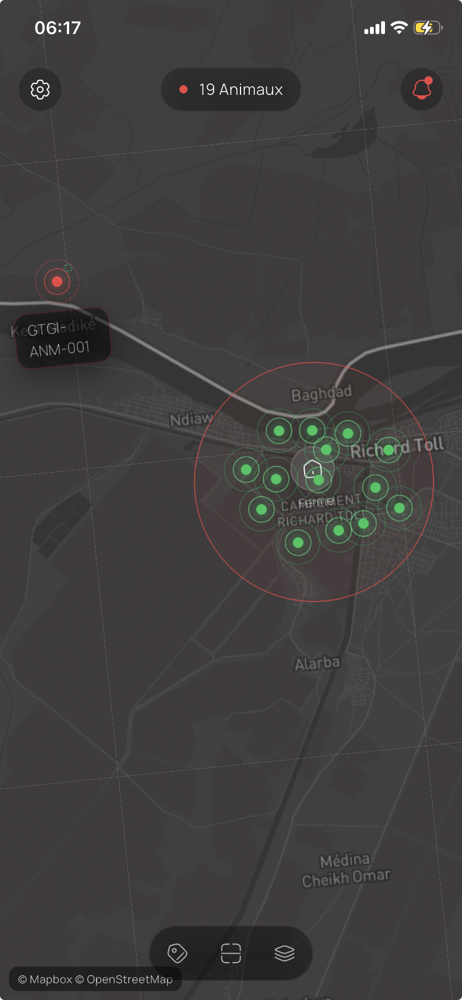
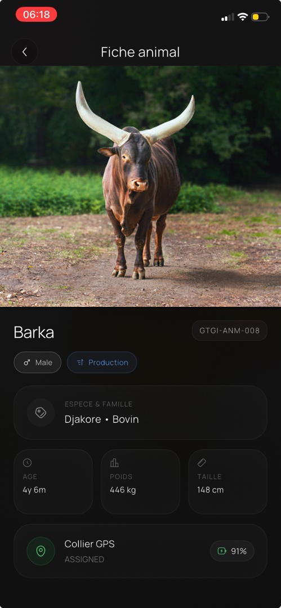

Identité
(puce RFID + QR code) : une identité unique et double pour chaque animal.
Nous donnons à chaque animal une identité numérique unique : des troupeaux protégés, traçables et bancables.
Contactez-nousAu Sénégal, l'élevage fait vivre des millions de personnes. Pourtant, faute d'identité fiable des animaux et d'outils adaptés, les éleveurs restent largement exclus du crédit et de l'assurance, et exposés au vol.
Source FAO SénégalPersonnes vivent de l'élevage (environ 350 000 ménages)
Des adultes seulement sont bancarisés (2023)
Taux de pénétration de l'assurance
Perdus chaque année à cause du vol de bétail
Entre une identification encore partielle, un suivi difficile en mobilité, des données dispersées et un accès limité au financement, les éleveurs manquent d'outils pour sécuriser et valoriser leur cheptel.
La plupart des animaux n'ont pas d'identité claire et vérifiable. La traçabilité, la preuve de propriété et le suivi administratif en deviennent difficiles.
Sur de grandes zones et en transhumance, il est difficile de savoir où se trouvent les animaux, de réagir vite en cas d'écart et de se prémunir contre le vol.
Faute d'historique numérique accessible, le suivi sanitaire et la gestion reposent encore sur des informations éparses, incomplètes ou difficiles à retrouver.
Sans identité ni historique exploitables, les animaux peinent à être reconnus comme des actifs, ce qui éloigne les éleveurs du crédit et de l'assurance.
Un identifiant unique et vérifiable pour chaque animal (QR code ou puce RFID).
Suivi du troupeau, anti‑vol et localisation grâce à un collier connecté (GPS + LoRa).
Un animal identifié devient un actif bancable, qui ouvre l'accès au crédit et à l'assurance.
GETT GI réunit en une seule plateforme tout ce qu'il faut pour identifier, suivre, protéger et valoriser un cheptel. Trois briques connectées entre elles : le matériel d'identité et de sécurité, l'application de l'éleveur et le tableau de bord des coopératives.
(puce RFID + QR code) : une identité unique et double pour chaque animal.
(GPS + LoRa) : localisation et anti‑vol au niveau du troupeau.
La gestion du cheptel au quotidien, même hors connexion.
Supervision de tous les éleveurs et traçabilité pour la coopérative.
Chaque écran, chaque alerte et chaque réponse sont d'abord conçus pour l'éleveur. Un assistant intelligent en langues locales permet d'utiliser GETT GI à la voix, sans barrière de lecture ni d'écriture.
Le collier intelligent GETT GI est pensé pour les conditions d'élevage au Sénégal : robuste, confortable pour l'animal, adapté aux longues distances et conçu pour transmettre les informations utiles au suivi du troupeau.
L'application éleveur est l'outil de gestion quotidien du cheptel : identifier chaque animal, suivre sa santé et ses mouvements, localiser le troupeau et recevoir les alertes de vol. Pensée pour le terrain, elle reste simple à utiliser et fonctionne même sans réseau, avec synchronisation automatique dès qu'une connexion revient.
Puce RFID et QR code pour identifier chaque animal et prouver la propriété.
Effectifs, entrées/sorties et suivi des mouvements.
Santé, vaccins, reproduction et historique.
Position temps réel et alertes de vol.
Saisie sans réseau et synchronisation.



L'application coopérative connecte la structure (coopérative ou organisation) à l'ensemble de ses éleveurs. Elle offre une vue complète du cheptel de tous les membres, centralise la traçabilité et la gestion, et transforme ces données fiables en passerelle vers le financement et l'assurance.
Tous les membres connectés avec leur cheptel au même endroit.
Effectifs consolidés et indicateurs clés de tout le réseau.
Origine et parcours des animaux, du pâturage à la collecte.
Campagnes de vaccination et alertes à l'échelle du réseau.
Organisation de la collecte et suivi de production par éleveur.
Données fiables facilitant l'accès au crédit et à l'assurance.
GETT GI mise sur les coopératives comme canal principal. Cette approche permet de répartir les coûts, d'équiper plus vite le terrain et de structurer l'adoption à grande échelle.
Un kit de départ permet d'équiper progressivement les animaux stratégiques sans imposer un coût trop élevé à chaque éleveur.
Les coopératives accèdent au suivi, aux alertes et à la gestion du cheptel via un abonnement récurrent.
Le modèle s'adapte ensuite aux unions, programmes, partenaires et institutions qui souhaitent déployer la solution plus largement.
Le passage par les coopératives rend la solution plus accessible, plus structurée et plus scalable.
En sécurisant et en structurant le cheptel, GETT GI agit bien au-delà du suivi : accès au financement, souveraineté alimentaire, inclusion des femmes et des jeunes, et ancrage d'une filière vitale dans une solution conçue localement.
têtes de bétail à l'échelle du pays.
du PIB agricole porté par l'élevage.
FCFA de pertes annuelles liées au vol.
des ménages agricoles pratiquent l'élevage.
Identifiés et traçables, les animaux deviennent des actifs reconnus, qui ouvrent l'accès au crédit et à l'assurance.
Des produits traçables, du pâturage à l'assiette, pour renforcer une filière stratégique.
Des outils simples et accessibles, au cœur des chaînes de valeur de l'élevage.
Une solution pensée au Sénégal, pour répondre aux réalités de toute l'Afrique.
De l'animal au financement,
une chaîne connectée.
Le matériel équipe l'animal, les données remontent à l'éleveur, la coopérative supervise l'ensemble, et le financement devient possible.
(01)On équipe l'animal
Identité unique double (puce RFID et QR code). Le troupeau est doté d'un collier connecté GPS + LoRa.
(02)Les données remontent
Le matériel communique avec l'application : identité, position et alertes anti-vol, même hors connexion.
(03)La coop. supervise
Chaque coopérative est connectée à ses éleveurs via un tableau de bord : traçabilité et gestion centralisée.
(04)Le financement
L'animal devient un actif reconnu. GETT GI relie l'éleveur aux banques et assureurs pour accéder au crédit.
(01)On équipe l'animal
Chaque animal reçoit une identité unique et double : une puce RFID sous‑cutanée et un QR code. Le troupeau est doté d'un collier connecté (GPS + LoRa).
(02)Les données remontent
La puce, le QR code et le collier communiquent avec l'application de l'éleveur : identité, position, alertes de vol, avec synchronisation dès qu'un réseau est disponible.
(03)La coop. supervise
Chaque coopérative est connectée à l'ensemble de ses éleveurs via un tableau de bord : vue globale, traçabilité et gestion centralisée.
(04)Le financement
L'animal devient un actif reconnu. GETT GI relie l'éleveur aux banques et assureurs pour accéder au crédit.